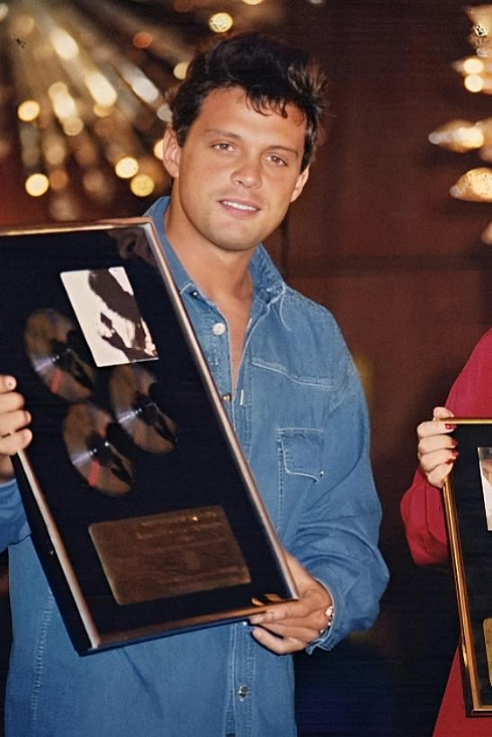

Comenzó su carrera en 1981, con once años de edad y a los 14 ganó su primer premio Grammy, convirtiéndose en el artista masculino más jóven en la historia de la música en recibir dicho galardón.Desde entonces, ha ganado 6 premios Grammy y otros 6 Grammy Billboard de la música Latina, 3 World Music Awards, 12 premios "Lo Nuestro". 5 ptrmios Spotify, entre nosotros.